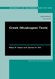
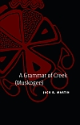
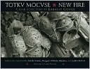
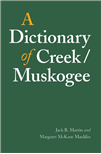

Link Color Scheme: In accordance with access status, Green buttons are strictly reserved for free, open-access sources (such as downloadable PDFs, open-access journal articles, and open online archives). Gray buttons are reserved for paid or subscription-access digital editions (such as JSTOR, University of Oklahoma Press, University of Nebraska Press, UChicago Press, De Gruyter, Oxford University Press, and John Benjamins). Citations without buttons indicate works where no direct digital copy is currently available online.
Muskogee (Creek) Publications
Haas, Mary R., and James H. Hill. 2015. Creek (Muskogee) Texts. Edited and translated by Jack B. Martin, Margaret McKane Mauldin, and Juanita McGirt. UC Publications in Linguistics. Berkeley: University of California Press.

Martin, Jack B. 2011. A Grammar of Creek (Muskogee). Lincoln: University of Nebraska Press.

Gouge, Earnest. 2004. Totkv Mocvse / New Fire: Creek Folktales. Edited and translated by Jack B. Martin, Margaret McKane Mauldin, and Juanita McGirt. Norman: University of Oklahoma Press.

Martin, Jack B., and Margaret McKane Mauldin. 2000. A Dictionary of Creek / Muskogee, with notes on the Florida and Oklahoma Seminole dialects of Creek. Lincoln / London: University of Nebraska Press.

Martin, Jack B. 2021. Muskogee (Creek) naming practices. Anthropological Linguistics 63(1-2): 178–196. [Appeared in April 2023].
Martin, Jack B. 2016. Muskogee (Creek) Literature. Pp. 75–101 in Marcia Haag, ed., A Listening Wind: Native Literature from the Southeast. Lincoln and London: University of Nebraska Press.
Martin, Jack B. 2010. How to Tell a Creek Story in Five Past Tenses. International Journal of American Linguistics 76(1): 43–70.
Mauldin, Margaret McKane, Jack B. Martin, and Gloria McCarty. In progress. “Pum Opunvkv, Pun Yvhiketv, Pun Fulletv / Our Language, Our Songs, Our Ways.” Ms., University of Oklahoma.
Martin, Jack B., and Keith Johnson. 2002. An acoustic study of “tonal accent” in Creek. International Journal of American Linguistics 68(1): 28–50.
Martin, Jack B., and Margaret McKane Mauldin. 2001. Creek. Facts about the World’s Languages: An Encyclopedia of the World’s Major Languages, Past and Present. Jane Garry and Carl Rubino, eds., 173–176. New York / Dublin: H. W. Wilson.
Johnson, Keith, and Jack B. Martin. 2001. Acoustic vowel reduction in Creek: Effects of distinctive length and position in the word. Phonetica 58: 81–102.
Martin, Jack B. 2000. Creek voice: Beyond valency. Changing Valency, ed. by R. M. W. Dixon and Alexandra Y. Aikhenvald, 375–403. Cambridge: Cambridge University Press.
Martin, Jack B. 1999. External possession in Creek. External Possession, ed. by Doris Payne and Immanuel Barshi, 229–250. Amsterdam/Philadelphia: John Benjamins.
Martin, Jack B. 1998. Notes on switch-reference in Creek. Proceedings from the first Workshop on American Indigenous Languages. Santa Barbara Papers in Linguistics, vol. 8. Santa Barbara: UCSB Linguistics Department.
Martin, Jack B., and Margaret Mauldin. 1997. Practical and ethical issues in lexicography: Examples from the Creek dictionary project. 1996 Mid-America Linguistics Conference Papers, ed. by Clifton Pye, 565–573.
Mauldin, Margaret, and Jack B. Martin. 1996. Verbs of wearing in Creek (Muskogee). 1994 Mid-America Linguistics Conference Papers, volume II: 588–597. Lawrence: University of Kansas Department of Linguistics.
Martin, Jack B. 1993. ‘Inalienable possession’ in Creek (and its possible origin). International Journal of American Linguistics 59: 443–452.
Martin, Jack B. 1991. Lexical and syntactic aspects of Creek causatives. International Journal of American Linguistics 57: 194–229.
Martin, Jack B. 1989. Absolutive -wa in Creek. Southwest Journal of Linguistics 9: 75–91.
Martin, Jack B. 1987. Agreement in Creek and the theory of inflection. Proceedings of the NELS 17 Conference, 443–465.
Koasati Publications
Martin, Jack B. To appear. Negation in Koasati. In Matti M. P. Miestamo and Ljuba Veselinova, eds. Berlin: Language Science Press.
Langley, Bertney, Linda Langley, Jack B. Martin, and Stephanie Hasselbacher. 2018. The Koasati Language Project: A collaborative, community-based language documentation and revitalization model. In Shannon Bischoff and Carmen Jany, eds., Insights from Practices in Community-Based Research. De Gruyter Mouton.
Gordon, Matthew, Jack B. Martin, and Linda Langley. 2015. Some Phonetic Structures of Koasati. International Journal of American Linguistics 81(1): 83–118.
Gordon, Matthew, Jack B. Martin, and Linda Langley. 2015. Prosodic structure and intonation in Koasati. In Proceedings of the 18th International Congress of Phonetic Sciences (ICPhS 2015).
Miccosukee (Mikasuki / Hitchiti) Publications
Cypress, Carol, and Jack B. Martin. 2006. A Dictionary of Miccosukee (Elaponke). Ah-Tah-Thi-Ki Museum, Seminole Tribe of Florida.
Martin, Jack B. 1987. Vowel lengthening in Hitchiti and Mikasuki and its relation to Proto-Muskogean metrical structure. Muskogean Linguistics, ed. by P. Munro, 111–118. (UCLA Occasional Papers in Linguistics, 6.) Los Angeles: UCLA Linguistics Department.
Choctaw Publications & Lexicography
Broadwell, George Aaron, and Jack B. Martin. 1993. The clitic/agreement split: Asymmetries in Choctaw person marking. Berkeley Linguistics Society 19: 1–10. Berkeley: UCB Linguistics Department.
Japanese Linguistics
Martin, Jack B. 1986. The ECP and indeterminates in Japanese. Journal of Asian Culture 9: 36–51. Los Angeles: UCLA.
Cross-Linguistic & Multi-Language Studies
Martin, Jack B. 2024. From switch-reference to case marking in Muskogean: The role of clefts. International Journal of American Linguistics 90(4): 465–486.
Martin, Jack B. 2024. Muskogean. In Carmen Dagostino, Marianne Mithun, and Keren Rice, eds. The Languages and Linguistics of Indigenous North America: A Comprehensive Guide. Volume 2. De Gruyter.
Grenoble, Lenore A. and Jack B. Martin, editors. 2023. Documenting multilingualism and contact [special issue]. Journal of Language Contact 15(2).
Gordon, Matthew K. and Jack B. Martin. 2023. Prominence in Muskogean languages. Pp. 274–307 in Ksenia Bogomolets and Harry van der Hulst (eds.). Word Prominence in Languages with Complex Morphologies. Oxford: Oxford University Press.
Martin, Jack B. 2016. Muskogean Languages. Oxford Research Encyclopedia of Linguistics.
Martin, Jack B. 2011. Muskogean Languages. Oxford Bibliographies. Oxford: Oxford University Press.
Martin, Jack B. 2007. Indigenous Languages, Other. Pp. 82–85 in Michael Montgomery and Ellen Johnson, eds., The New Encyclopedia of Southern Culture, Vol. 5: Language. Chapel Hill: University of North Carolina Press.
Martin, Jack B., and Pamela Munro. 2005. Proto-Muskogean morphology. Pp. 299–320 in Heather K. Hardy and J. Scancarelli, eds., Native Languages of the Southeastern United States. Lincoln: University of Nebraska Press.
Martin, Jack B. 2004. Languages. Pp. 68–86 in Handbook of North American Indians. Vol. 14. Southeast. Raymond D. Fogelson, vol. ed. Washington: Smithsonian Institution.
Martin, Jack B. 1994. Implications of plural reduplication, infixation, and subtraction for Muskogean subgrouping. Anthropological Linguistics 36: 27–55.
Martin, Jack B. 1994. Modeling language contact in the prehistory of the southeastern U.S. Perspectives on the Southeast: Linguistics, Archaeology, and Ethnohistory, ed. by P. Kwachka, 14–24, 143–163. (Southern Anthropological Society Proceedings, 27.) Athens: University of Georgia Press.
Campbell, Richard, and Jack B. Martin. 1989. Sensation predicates and the syntax of stativity. Proceedings of the Eighth West Coast Conference on Formal Linguistics (WCCFL 8), ed. by E. J. Fee and K. Hunt, 44–55. Stanford, CA: CSLI.
Martin, Jack B. 1988. Subtractive morphology as dissociation. Proceedings of the Seventh West Coast Conference on Formal Linguistics (WCCFL 7), ed. by H. Borer, 229–240. Stanford, CA: CSLI.
Martin, Jack B. 1991. The Determination of Grammatical Relations in Syntax. (UCLA Dissertations in Linguistics, 4.) Los Angeles: Linguistics Department, UCLA.
Martin, Jack B. 1989. Underlying nasals in Crow, Hidatsa, and Proto-Missouri River (Siouan). Kansas Working Papers in Linguistics 14: 57–67, ed. by J.-S. Ok and M. Taneri. University of Kansas: Linguistics Graduate Student Association.